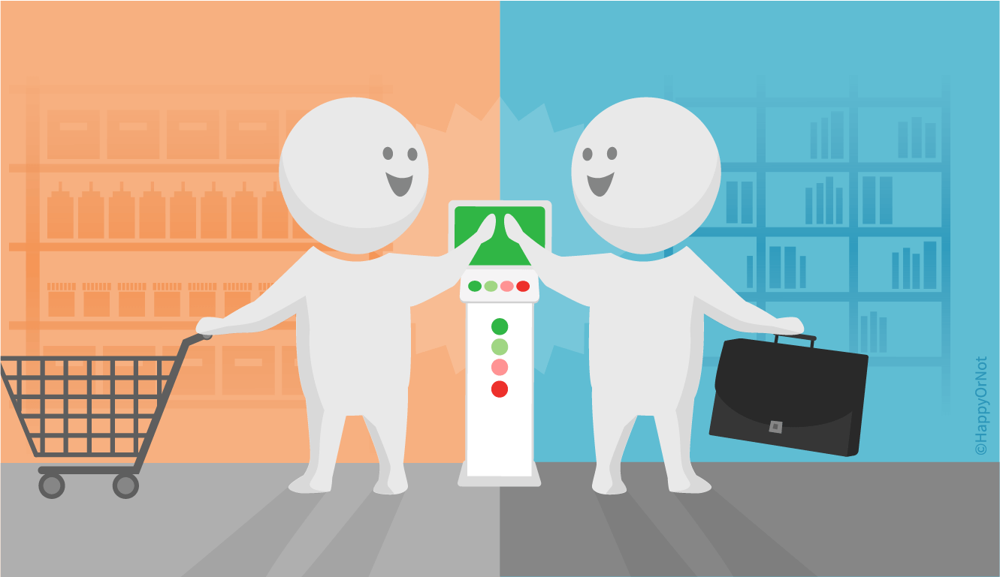

Consumidores de Servicio
Al recibir servicios, una organización asume el rol de consumidor del servicio. El consumidor de servicios es un rol genérico; en la práctica, el consumo de servicios incluye roles más específicos: cliente, usuario y patrocinador.
Que es el Cliente
Cliente es una persona que define los requisitos para un servicio y asume la responsabilidad de los resultados del consumo del servicio
Que es el Usuario
Es una persona que utiliza el servicio en su día a día sin necesariamente definir los requisitos del servicio o asumir la responsabilidad de los resultados del consumo del servicio, pero que puede proporcionar información valiosa sobre la experiencia y el rendimiento del servicio.

Relación entre Usuario y Cliente
La relación entre usuarios y clientes en ITIL 4 es de interdependencia. Los clientes definen y financian los servicios necesarios, mientras que los usuarios los utilizan en su trabajo diario. El éxito de un servicio depende tanto de la satisfacción del usuario en términos de funcionalidad y usabilidad como de la satisfacción del cliente en términos de cumplimiento de objetivos y relación calidad-precio. Los usuarios proporcionan retroalimentación continua sobre el rendimiento y la usabilidad del servicio, fundamental para la mejora continua, mientras que los clientes, basados en esta retroalimentación y en el análisis de costos y beneficios, pueden tomar decisiones sobre la continuidad, mejora o reemplazo del servicio. Entender estas diferencias es crucial para gestionar y alinear los servicios de TI con las necesidades y expectativas de ambas partes, garantizando un enfoque centrado en el valor y la mejora continua dentro del marco de ITIL 4.
Patrocinador
Es una persona u entidad que proporciona el respaldo financiero y/o el apoyo político para el desarrollo, la entrega y la mejora de un servicio. A menudo, el patrocinador tiene un interés estratégico en el éxito del servicio y puede influir en la asignación de recursos y la toma de decisiones relacionadas con el servicio. Además, el patrocinador es una persona que autoriza el presupuesto para el consumo del servicio.